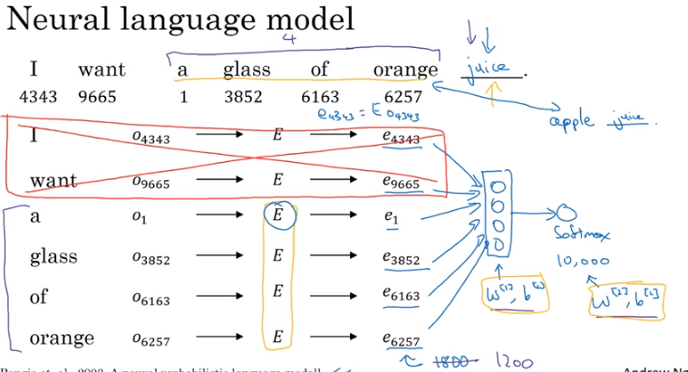

Word Embeddings
Machine Learning applications ultimately boil down to a bunch of matrix multiplication plus some extra stuff. So seeing how it’s difficult to multiply strings by strings, it stands to reason that we want to represent our string data in some fashion.
Thankfully Word Embeddings do just this.
Overview
Say we have a vocabulary, V, of 10,000 words that include
[a, aaron, ..., zulu, <UNK>]
(here, <UNK> is a stand-in for any words we might not have considered)
Through Word Embedding, each word in our vocabulary gets some n-dimensional vector that repsents the word’s meaning. You can construct arbitrarily-many dimensions to represent the word, but intuitively the learned embeddings (more on this below) will represent where the word falls on a number of spectrums, such as:
- hot vs cold
- happy vs sad
- open vs closed
and many, many others. It’s also worth noting that these values won’t always be human-interpretable.
Expressing a word as its Word Embedding first requires two objects:
One-Hot Representation
We can represent any word in this vocabulary as a one-hot vector of length vocabulary_size that looks like
[0 0 0 0 ... 0 0 1 0 0 ... 0 ]
If i is the list index of the word in question, then the vector is straight 0s across the board, save for a 1 at the ith index.
Embedding Matrix
The Embedding Matrix is a vocabulary_size X enbedding_dimension size matrix of numbers. For instance, if we wanted a 300-dimensional embedding for the vocabulary outlined above, our Embedding Matrix, E would have dimensions 10000 x 300.
So when we want to extract the Embedding Vector representation of a word, multiply the One Hot Representation by the Embedding Matrix like so
from IPython.display import Image
Image('images/embedding_matrix.png')
In practice, the Embedding Matrix, E is instantiated randomly and learned by training. It is also a very sparse matrix, and so we use the Embedding object in keras.layers to handle efficient calculation for us.
Training Embeddings
As outlined in course 5 of Andrew Ng’s Deep Learning specialization, one approach for training the Embedding Matrix is to programmatically cycle through words 4 at a time, attempting to predict the next.
Here, we:
- Establish a target word, “juice”
- Generate one-hot representations for “a glass of orange”
- Multiply by
Eto get embedding vectors - Stack the embedding vectors
- Feed this matrix to a Dense layer and try and predict the word “juice” using a softmax output
Image('images/learning_embedding.png')
Alternatively, we could try other context/target strategies, such as sandwiching, previous word, or taking an arbitrary number of nearby words (which is more popular in practice)
Image('images/other_embedding.png')